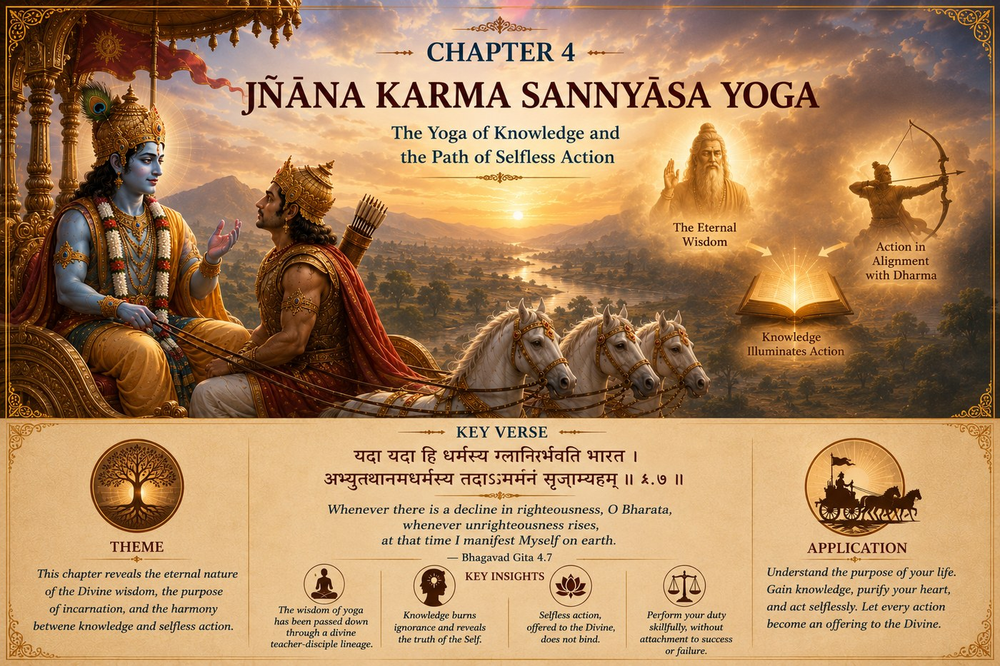

The GITA Project › Week 4 · Chapter 4

Week 4 · Chapter 4 — Jñāna Karma Sannyāsa Yoga: The Yoga of Knowledge and Selfless Action
Student Theme — How Wisdom Changes the Way We Act
Chapter SummaryWhat Happens in Chapter Four
Chapter Four deepens the teachings of Karma Yoga by revealing the divine origin of this timeless wisdom. Lord Shri Krishna explains that He has taught this eternal Yoga through generations whenever Dharma declines. He reveals His divine nature, explaining that although unborn and eternal, He incarnates to protect the righteous, re-establish Dharma, and guide humanity. Lord Shri Krishna teaches that true knowledge transforms action. When actions are performed without ego, attachment, or selfish desire, they no longer bind the individual. He emphasizes the importance of approaching a realized teacher with humility, inquiry, and service. Spiritual knowledge burns ignorance just as fire reduces fuel to ashes, freeing the seeker to act with wisdom and confidence.
How the great teachers illuminate this chapter — each from their own lineage of wisdom.
Presents this chapter as a profound exposition of liberating knowledge. The Lord's incarnation is understood as an expression of compassion for humanity, while remaining untouched by worldly limitations. True renunciation is not abandoning action but abandoning ignorance and the false identification with the body. Knowledge of the Self destroys the bondage created by karma, allowing actions to continue without attachment or doership.
Emphasizes the Lord's loving descent for the protection of devotees and the restoration of Dharma. Divine incarnations reveal God's compassion and accessibility. Knowledge is perfected through devotion, trust, and surrender to the Supreme Lord. Actions dedicated to Him become sacred, and learning from a qualified teacher strengthens both faith and understanding.
Teaches that Lord Shri Krishna is the Supreme Reality who incarnates by His own will for the welfare of creation. The distinction between the individual soul and the Supreme Lord remains eternal. Knowledge is received through the Lord's grace and authentic teachers. Selfless action aligned with Divine instruction leads the seeker steadily toward spiritual progress.
Interprets this chapter as an invitation to lifelong learning. He explains that knowledge transforms the quality of action. When we understand the purpose behind our responsibilities, work becomes meaningful instead of burdensome. Humility, disciplined inquiry, and learning from experienced mentors are essential for growth in every stage of life.
Highlights the transformative power of spiritual wisdom. Ignorance creates fear, confusion, and attachment, while knowledge brings clarity and freedom. Lord Shri Krishna's assurance that He guides humanity whenever Dharma declines inspires hope and confidence. By sincerely seeking wisdom and applying it in daily life, individuals gradually overcome limiting habits and cultivate inner peace.
Common Threads of Dharma All five teachers affirm that true knowledge transforms both the individual and the quality of action. Lord Shri Krishna's teachings are timeless and arise from compassion for humanity. Authentic learning requires humility, sincere inquiry, disciplined practice, and guidance from a worthy teacher. When ignorance is removed, actions become expressions of Dharma rather than sources of bondage.
…we begin to wonder whether the values we were handed are truly worth trusting.
As we grow, we stop simply accepting what we are told. We start asking why. Why is this considered right? Where did these values come from? Are they still true today, or just old habits? This questioning is not disrespect. It is a sign that understanding is beginning to replace mere obedience. Chapter Four meets us exactly at that question.
One question — When someone says “this is just our tradition,” is that a reason to accept it, to question it, or both?
A moment you may know — An elder tells you to do something “because that's how it's always been done,” and part of you wants to understand the reason, not just follow.
This chapter's promise — You will discover that the Gita welcomes sincere questions, and that true wisdom is meant to be understood, not just inherited.
Where does this wisdom come from?
Arjuna has learned how to think and how to act. But a new question rises: Who are You, Krishna, to teach me this — and how do I know this wisdom is true? Lord Shri Krishna's answer is surprising. This knowledge, He says, is not something He is inventing on the battlefield. It is ancient. It was taught long ago, passed carefully from teacher to student across countless generations, until, over time, it was partly forgotten. Now He is speaking it again.
In other words, Arjuna is not receiving a brand-new opinion. He is receiving timeless wisdom — the same light, carried forward like a flame passed from one lamp to the next.
Understanding the SituationThink about everything you know how to do — read, write, add, speak a language, play a sport. You did not invent any of it. Someone taught you, and someone taught them, reaching back further than you can imagine. Almost everything valuable in your life was received before it became your own.
The same is true of wisdom about how to live. Chapter Four teaches that Dharma is not something each person makes up alone. It is a light that has been carried across generations. Our task is not to invent it, but to understand it honestly — and that understanding begins with humility.
The Court of Dharma™Six steps into the source of wisdom
- One Situation
- Arjuna wonders where Krishna's teaching comes from and why it can be trusted.
- One Dilemma
- Should we simply accept inherited values, or must we understand them for ourselves before we can truly live them?
- One Question
- Where does Dharma come from, and why should I trust it?
- One Conversation
- Krishna explains that this knowledge is timeless, passed down through a lineage of teachers, and that He Himself appears across the ages whenever Dharma declines, to restore balance. He teaches that sincere knowledge purifies the mind, and that the way to receive it is to approach a genuine teacher humbly, with honest questions.
- One Virtue
- Humility — the openness to be taught, to ask sincerely, and to admit we do not yet fully understand.
- One Life Practice
- Ask one sincere question each day — of a teacher, an elder, a book, or yourself. (Full practice below.)
Three verses on timeless wisdom
Verse 1 — Whenever Dharma declines · 4.7
यदा यदा हि धर्मस्य ग्लानिर्भवति भारत ।
अभ्युत्थानमधर्मस्य तदात्मानं सृजाम्यहम् ॥
yadā yadā hi dharmasya glānir bhavati bhārata
abhyutthānam adharmasya tadātmānaṁ sṛijāmyaham
“Whenever there is decay of righteousness, O Bharata, and there is exaltation of unrighteousness, then I Myself come forth;”
— Bhagavad Gita 4.7 · trans. Annie Besant (1922), public domain — via Wikisource
Words to Remember — dharma righteousness · glāni decline, weakening · adharma unrighteousness · sṛijāmi I manifest / bring forth.
In plain words. This is one of the most beloved verses in the Gita. It promises something hopeful: no matter how dark things become, goodness is never permanently defeated. Whenever Dharma weakens, the power to restore it arises.
Reflect: When you see something unfair in the world, do you believe it can be made right?
Verse 2 — Age after age · 4.8
परित्राणाय साधूनां विनाशाय च दुष्कृताम् ।
धर्मसंस्थापनार्थाय सम्भवामि युगे युगे ॥
paritrāṇāya sādhūnāṁ vināśhāya cha duṣhkṛitām
dharma-sansthāpanārthāya sambhavāmi yuge yuge
“For the protection of the good, for the destruction of evil-doers, for the sake of firmly establishing righteousness, I am born from age to age.”
— Bhagavad Gita 4.8 · trans. Annie Besant (1922), public domain — via Wikisource
Read this carefully — it is about cosmic balance, not personal vengeance
scriptural review This verse describes the Divine restoring Dharma across the ages — a promise that goodness is ultimately protected. It is not permission for any person to decide who is “wicked” and punish them. The Gita never asks students to appoint themselves as judges. When we meet unfairness, our task is honest, lawful, compassionate action — not vengeance.
Words to Remember — paritrāṇa protection · sādhu the good · dharma-sansthāpana re-establishing Dharma · yuge yuge age after age.
Reflect: What is the difference between wanting justice and wanting revenge?
Verse 3 — Nothing purifies like knowledge · 4.38
न हि ज्ञानेन सदृशं पवित्रमिह विद्यते ।
तत्स्वयं योगसंसिद्ध: कालेनात्मनि विन्दति ॥
na hi jñānena sadṛiśhaṁ pavitramiha vidyate
tatsvayaṁ yogasansiddhaḥ kālenātmani vindati
“Verily there is no purifier in this world like wisdom; he that is perfected in yoga finds it in the Self in due season.”
— Bhagavad Gita 4.38 · trans. Annie Besant (1922), public domain — via Wikisource
Words to Remember — jñāna knowledge, realization · pavitra purifying · kālena in due time · ātmani within oneself.
In plain words. Real understanding cleans the mind the way light clears a dark room. But notice the honesty of the verse: such knowledge ripens “in due course of time,” through patient practice. Wisdom cannot be rushed or crammed.
Reflect: What is something you understand far more deeply now than you did a few years ago?
Later in this chapter, Krishna gives Arjuna a simple method for gaining such knowledge: approach a genuine teacher, ask sincere questions, and serve with humility (a paraphrase of verse 4.34). Wisdom grows through honest inquiry, not through pretending we already know.
Dharma LensWhen should we trust, and when should we question?
Chapter Four honors inherited wisdom and honest questioning — which raises a real tension.
A situation without an obvious answer
Dev is told by a respected elder to follow a family custom he doesn't understand and privately disagrees with. Speaking up feels disrespectful; staying silent feels dishonest. Is humility here about trusting the wisdom of those who came before him — or about honestly asking to understand, even at the risk of seeming to challenge an elder?
The Gita praises both the lineage of teachers and Arjuna, who questions Krishna directly. So which is Dharma — accepting, or asking?
The Gita's own example suggests it is not either/or. Arjuna trusts Krishna and keeps asking questions — and Krishna welcomes them. True humility is not silent obedience, and it is not proud defiance. It is the sincere posture of a learner: “I respect this wisdom enough to want to understand it.” A thoughtful person might handle Dev's moment in more than one way — the key is whether the questioning comes from genuine seeking or from mere ego.
Character in Practice · HumilityWhat it means. Being open to learning — willing to ask, to be corrected, and to admit you don't yet fully understand.
What it does not mean. Thinking poorly of yourself, or blindly obeying without understanding.
In daily life. Asking a question in class even when you fear looking foolish; thanking someone who corrects you; learning from people younger or “less important” than you.
How it's misread. As weakness or low confidence. Real humility is quietly confident — it has nothing to prove.
Recognizing progress — without self-righteousness. You find it easier to say “I was wrong” and “teach me.” Pair humility with discernment — the ability to weigh what you're taught thoughtfully.
The class where you don't raise your hand because you're afraid the question is “dumb.” The mentor or coach whose advice you resist because accepting it means admitting you had it wrong. The grandparent whose stories you've stopped really listening to. Chapter Four gently suggests: the people and traditions around you are carrying lamps. Humility is simply being willing to let them light yours.
Leadership LabImagine you are leading a project and a quieter, less experienced teammate suggests an idea that is actually better than yours. Everyone is watching. Do you protect your pride and dismiss it — or do you have the humility to say, “That's a better idea; let's do that”?
The strongest leaders are not those who always have the best idea. They are those secure enough to recognize a better one, wherever it comes from. Humility, not ego, is what lets a leader keep learning — and keep earning trust.
Discussion Circle- ObserveAccording to Krishna, is the wisdom of the Gita new or ancient? How does He describe the way it travels?
- InterpretWhat does it mean that knowledge is “purifying” (4.38)? Purifies what, and how?
- ConnectDescribe something you resisted learning at first but were later grateful to understand.
- Ethical tensionReturn to Dev. When is questioning an elder a form of humility, and when is it just ego?
- ApplyWhat is one sincere question you could ask a teacher, parent, or mentor this week?
- ChallengeSomeone says, “Traditions are old, so they must be outdated.” Respond using this chapter — fairly to both sides.
Purpose: experience wisdom being passed down, and practise humble inquiry. Time: 20–30 min conversation during the week · Format: individual, shared back in class · Materials: a few prepared questions, journal.
- Choose an elder — a grandparent, teacher, neighbour, or family friend.
- Ask them: What is one lesson life taught you that you wish you'd learned sooner? Who taught you what matters most?
- Listen fully — do not argue or interrupt. Just receive.
- Afterward, write down the one thing that stayed with you, and why.
The One Sincere Question Practice
Each day this week, ask one genuine question you actually want the answer to — of a teacher, a parent, a book, or yourself — and truly listen to the response, even if it surprises you.
Notice how it feels to ask honestly rather than pretending to know. Humble questions open doors that confident answers keep shut.
1. Personal. What is one belief you hold mainly because you were told it — and would like to understand for yourself?
2. Dharma. Where in your life is it hardest to say “I don't know” or “I was wrong”?
3. Character. Who has been a lamp for you — someone whose wisdom lit your way? Have you thanked them?
4. Action commitment. One sincere question I will ask this week, and who I'll ask:
5. A private question (you never have to share this): Is there advice you've been resisting mostly because accepting it would mean admitting you were wrong?
For a parent or guardian — please listen more than you speak. This is a conversation, not a quiz.
1. Who taught you the values you live by? What do you remember about them?
2. Is there a tradition in our family whose meaning you'd like me to understand?
3. When you were young, what did you question — and what did you come to appreciate later?
Teacher Note — Chapter 4
Objective: students can explain that the Gita presents Dharma as timeless wisdom passed through a lineage, and can name humble inquiry as the way to receive it.
Sensitive-topic alert: verse 4.8 (“annihilate the wicked”) needs the careful framing given in the callout — cosmic restoration of Dharma, never a personal license to harm or to label people as evil. scriptural review
Likely question: “Does questioning tradition mean disrespecting it?” → Use Arjuna himself: he trusts and questions; sincere inquiry is honored throughout the Gita.
Misconception to avoid: equating humility with blind obedience, or equating questioning with arrogance. Distinguish sincere seeking from ego.
Transition to Chapter 5: now that Arjuna trusts the source of the teaching, he asks a practical question — is it better to renounce action, or to act? Chapter 5 answers.
Week in One Minute
- Teaching
- Dharma is timeless wisdom, carried from teacher to student across the ages, and received through humble inquiry.
- Key verse
- “Whenever there is a decline in righteousness… I manifest Myself on earth.” — 4.7
- Dharma insight
- Goodness is never permanently defeated — but restoring Dharma means honest action, not personal vengeance.
- Practice
- Ask one sincere question each day, and truly listen.
A question to carry forward — Whose lamp lit mine, and whose lamp can I help to light?
In Chapter Five, Arjuna asks a very practical question. Some teachings seem to praise renouncing the world; others urge action. Which is better — to walk away from responsibility in search of peace, or to remain fully engaged in life? Lord Shri Krishna's answer reveals that the problem was never action itself. The problem is attachment — and peace is found not by escaping life, but by learning to live it wisely.
Spiritual practices can support well-being, but students experiencing persistent distress should speak with a trusted adult and, when necessary, a qualified health professional.